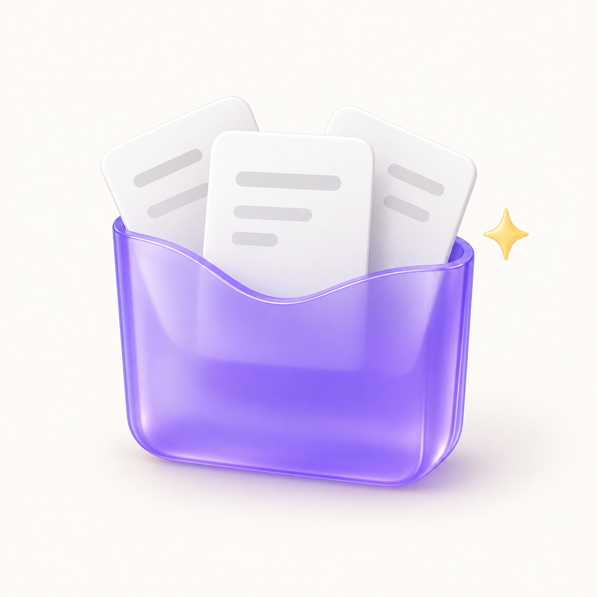

给每一次灵感，一个好开头
好用的提示词，
都在口袋里。
写不顺的开头，理不清的思路，迟迟没开始的计划。
挑一条提示词，让 AI 帮忙推进下一步。
精选 12 条无需注册复制即用

A little prompt. A new possibility.THE PROMPT COLLECTION
今天，从哪一点灵感开始？
选一个场景，找到能马上用上的那一句。
当前浏览器暂时无法保存内容。本次仍可使用，关闭页面后新增内容可能丢失。
暂时没有匹配的提示词
换个关键词，或试试其他分类。
SMALL STEPS, GOOD IDEAS
从“怎么问”，
到“开始做”。
三步，把一个好问题交给 AI。
- 01
挑一个场景
按实际任务选择提示词，点击卡片查看完整内容。
- 02
补上具体材料
把方括号里的内容换成自己的背景、目标和原文。
- 03
带到常用的 AI
复制后粘贴进 AI 对话，读完结果，再补充要求。
GOOD TO KNOW
几个小问题
简单开始，也知道内容去了哪里。
这些提示词可以在哪些 AI 工具里使用？
可以复制到支持文字对话的 AI 工具中。不同模型的回答会有差异；联网检索、读取文件等任务，还需要所用工具具备对应能力。
收藏和新增提示词保存在哪里？
只保存在当前设备、当前浏览器的本地存储中，不上传服务器。更换设备、浏览器或网址不会自动同步；清理网站数据可能丢失收藏。重要内容请另外备份。
点击复制后，AI 会自动开始工作吗？
不会。这里负责整理和复制提示词，不直接调用大模型。复制完成后，需要粘贴到常用的 AI 对话里，并补齐方括号中的材料。
这个页面需要付费吗？
这个学习演示页面可以免费使用，不需要注册。所使用的 AI 工具是否收费，由对应工具的规则决定。